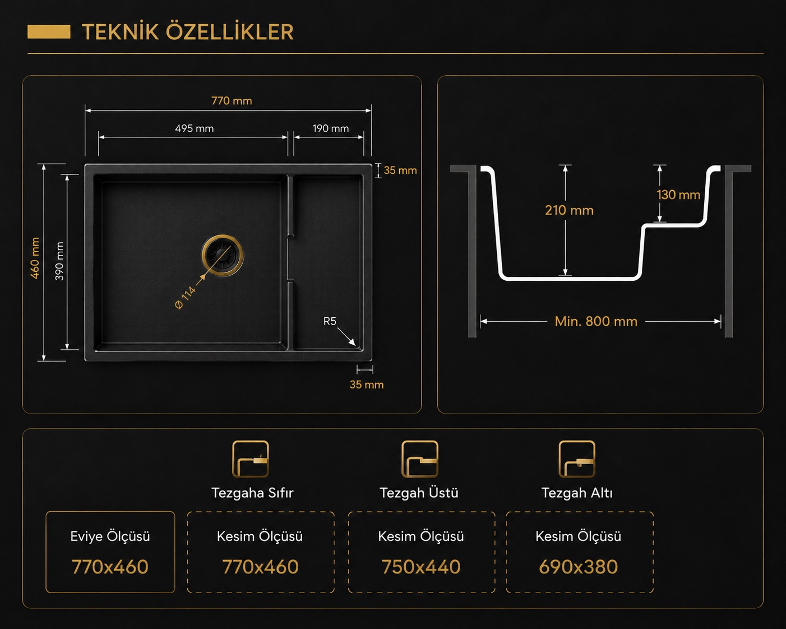

P017 PATARA
Pro Serisi Granit Evye
P017 Patara, geniş ana haznesi ve yükseltilmiş yardımcı bölmesiyle yıkama, hazırlık ve süzme işlemlerini tek alanda düzenler. Dayanıklı granit yüzeyi, üç farklı montaj seçeneği ve altı seçkin rengiyle modern mutfaklara uyum sağlar.
Renk Seçenekleri
Siyah
Antrasit
Gri
Beyaz
Krem
Cappuccino
Öne Çıkan Özellikler
- Geniş Ana Hazne Derin ve geniş ana haznesi, büyük tencere ve mutfak gereçlerinin rahatça yıkanmasını kolaylaştırır.
- Yükseltilmiş Yardımcı Bölme Basamaklı yardımcı alan, hazırlık ve süzme işlemlerini ana hazneden ayrı ve düzenli şekilde yapmayı sağlar.
- Üç Montaj Seçeneği Tezgaha sıfır, tezgah üstü ve tezgah altı uygulamalar için uygun kesim ölçüleri sunar.
- Dayanıklı ve Kolay Temizlenen Yüzey Sağlam granit yapısı yoğun kullanıma dayanırken pürüzsüz yüzeyi günlük temizliği kolaylaştırır.
Teknik Özellikler
- Ürün Ölçüsü: 770x460
- Tezgaha Sıfır Kesim Ölçüsü: 770x460
- Tezgah Üstü Kesim Ölçüsü: 750x440
- Tezgah Altı Kesim Ölçüsü: 690x380
Renk Ürün Kodları
- Siyah / Ürün Kodu: P1766010413
- Antrasit / Ürün Kodu: P1766010417
- Gri / Ürün Kodu: P1766010415
- Beyaz / Ürün Kodu: P1766010411
- Krem / Ürün Kodu: P1766010421
- Kapuçino / Ürün Kodu: P1766010419
Teknik Çizim
